← Index · ← Previous · Next →
Authors: Zachary P. Bradshaw
Type: theory · Category: quantum information and computing · PDF: https://arxiv.org/pdf/2610.05189v1
Analysis basis: full PDF text, analyzed in chunks
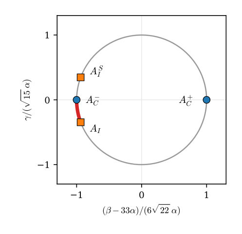
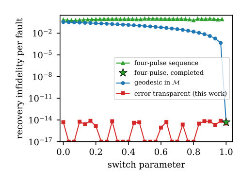
Summary. This theoretical work establishes the necessary and sufficient conditions for performing error-transparent switching between two distinct permutation-invariant quantum error-correcting codes. By linking the switch's existence to the continuous path connecting the codes through distance-three structures, the authors construct a highly accurate, fault-tolerant switching unitary. This advances the practical feasibility of modular quantum computation by ensuring robustness during code transitions.
Why it may be interesting. The rigorous mathematical framework for ensuring fault-tolerant operations across different quantum codes is highly relevant to building large-scale quantum processors.
Main problem. The paper addresses the challenge of achieving error-transparent code switching between two different permutation-invariant quantum error-correcting codes.
Main result. An error-transparent switch exists if and only if the two codes are connected by a continuous path of distance-three codes, and the constructed unitary achieves machine-precision recovery fidelity.
Method. The analysis uses algebraic constraints derived from the requirement of distance-three codes and constructs the switching unitary as a collective operator along a continuous path.
Model / system. The system involves quantum error-correcting codes on $n$ qubits, specifically permutation-invariant (PI) codes utilizing transversal Clifford and Icosahedral gates. The switching mechanism is analyzed by examining the constancy of the error geometry along the path connecting the two codes.
Key observables. Recovery infidelity per fault, error geometry (inner products between error states), and the fidelity of the recovered channel.
Important parameters / regimes. The distance of the codes (specifically distance $\ge 3$), the fault probability ($p$), and the number of qubits ($n$, up to 29).
Assumptions / limitations. The analysis assumes the switch acts on a single block without ancilla codes, and the error model is restricted to single-qubit faults.
Figures summary. The notes do not provide a summary of figures, but mention explicit constructions for 13 qubits forming a circle through Clifford and Icosahedral codes.
Paper structure. The paper progresses from defining the problem (error-transparent switching) to establishing necessary conditions (distance-three codes, constant error geometry), deriving the existence criterion (continuous path), and finally constructing and verifying the unitary operator.
Code switching moves an encoded qubit between two codes whose transversal gates together are universal, but the switching operation itself is usually not transversal and can spread a single fault into an uncorrectable error. We study switching between two permutation-invariant codes on the same qubits, one with transversal Clifford gates and one with transversal gates from the non-Clifford binary icosahedral group. Both are compatible with transversal $X$, $Z$, and $F = HS^\dagger$, and the encoders with this property form a small linear space. We show that its codes of distance at least three are cut out by at most two quadratic equations, and that all of them have the same error geometry in the sense that their single-qubit error states have the same inner products. It follows that a switching unitary commuting with qubit permutations and with the shared transversal gates at every instant, and tolerating one single-qubit fault at an unknown time, exists if and only if the two codes are joined by a continuous path of distance-three codes. Such a switch can be made error transparent, so that a fault at any moment reaches the target code as the same single-qubit error. For real encoders, the distance-three codes are the solutions of a single quadratic equation, and on thirteen qubits, they form an explicit circle through two Clifford codes and an icosahedral code. We construct the switching unitary along this circle as a collective operator, leaving its synthesis into physical control open, and verify that its recovery infidelity per fault is at machine precision, whereas two natural alternatives leave average infidelities of $0.13$ and $0.85$. A survey over odd qubit numbers up to $29$ lists where such switches exist.
Authors: Nicolae Cotfas
Type: theory · Category: other · PDF: https://arxiv.org/pdf/2610.05623v1
Analysis basis: full PDF text, analyzed in chunks
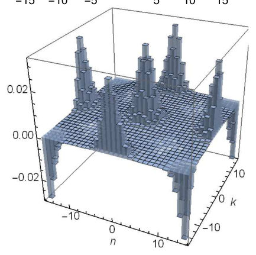
Summary. This paper introduces a frame-dependent measure of coherence for Gaussian quantum states, moving beyond traditional basis-dependent definitions. It derives an explicit formula for this coherence using the covariance matrix for continuous variables and establishes a rigorous connection to the discrete variable case. This provides a more robust and general tool for quantifying quantum coherence in Gaussian systems.
Why it may be interesting. This work provides a powerful, basis-independent tool (frame-dependent coherence) to characterize quantum states, which is crucial for understanding how coherence measures behave when the underlying mathematical description of the state space is generalized beyond standard orthonormal bases.
Main problem. The paper develops an alternative method to quantify quantum state coherence for Gaussian states by utilizing a 'tight frame' description instead of standard orthonormal bases or the Hermite-Gauss basis.
Main result. An explicit, closed-form formula for the frame-dependent coherence of a mixed Gaussian state is derived, expressed simply in terms of the determinant and trace of the state's covariance matrix.
Method. The authors generalize the $\ell_1$-norm of coherence to tight frames, deriving specific formulas for both continuous-variable (CV) and discrete-variable (DV) Gaussian states, and analyzing the convergence between the two descriptions.
Model / system. The focus is on single-mode, pure or mixed, Gaussian quantum states, which are characterized mathematically by their covariance matrix ($\sigma$) in the continuous case, and by discrete Wigner functions in the discrete case.
Key observables. Frame-dependent coherence ($ ext{CF}( ho)$), Purity ($ ext{tr} ho^2$), Covariance matrix ($\sigma$).
Important parameters / regimes. The dimension of the Hilbert space ($d$), the determinant ($\det \sigma$), and the trace ($ ext{tr} \sigma$) of the covariance matrix.
Assumptions / limitations. The derivation relies on the mathematical framework of tight frames and the assumption that the discrete system converges to the continuous limit as the dimension increases.
Figures summary. The notes mention Figure 1 showing the discrete-variable Gaussian function and its Wigner function, and Table I comparing purity and coherence values between CV and DV Gaussian states across different dimensions.
Paper structure. The paper first introduces the concept of frame-dependent coherence, then derives the general formula for CVGS using the covariance matrix, and finally extends this analysis to DVGS, demonstrating the convergence between the two descriptions.
A Hilbert space is usually described using an orthonormal basis, but a more general description can be defined using a tight frame. In the case of continuous-variable Gaussian states, the coherence is usually described using the Hermite-Gauss basis. We present an alternative description using the tight frame of all canonical coherent states. The description of Gaussian states in terms of coherent states is simpler than in terms of Hermite-Gauss basis, and this allows us to obtain an explicit formula describing the frame-dependent coherence of a mixed Gaussian state as a function of the determinant and the trace of covariance matrix. For each mixed Gaussian state, we construct a sequence of discrete-variable quantum states rapidly convergent to it (as concern the purity and coherence) when the dimension of Hilbert space becomes large enough (15 or more). In the discrete case, the coherence is measured with respect to the tight frame of all discrete coherent states.
Authors: Patrick Hayden, Alexander Maloney, Jinzhao Wang, Yuxiang Yang
Type: theory · Category: quantum information and computing · PDF: https://arxiv.org/pdf/2610.06741v1
Analysis basis: full PDF text, analyzed in chunks
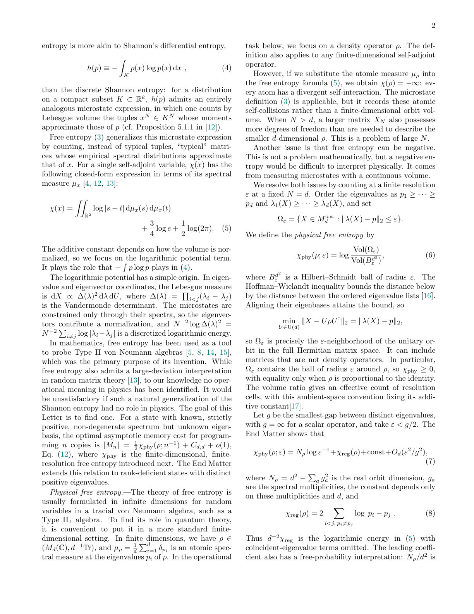
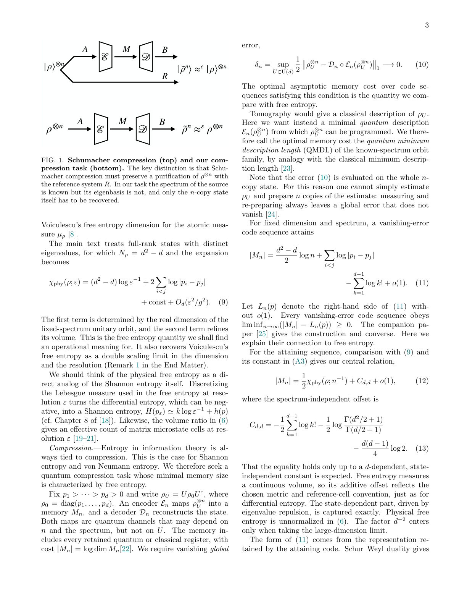
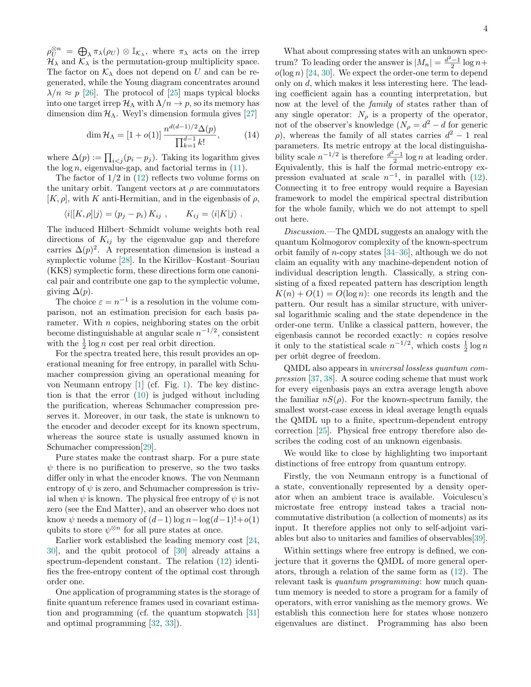
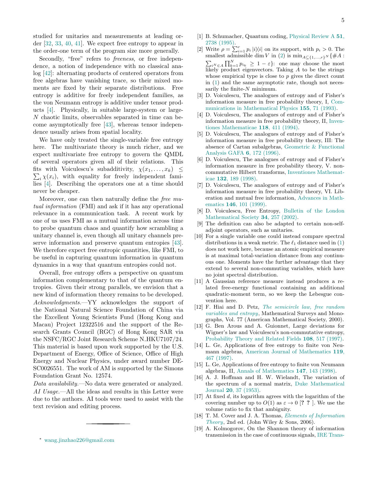
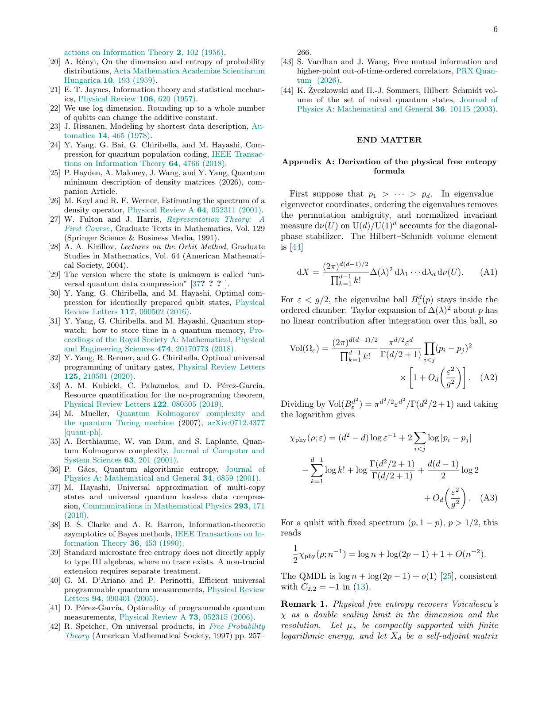
Summary. This paper connects the abstract mathematical concept of free entropy to a concrete physical resource: the minimum quantum memory required to store many copies of a quantum state. By showing that the physical free entropy characterizes the optimal compression cost, it gives free entropy a tangible role in quantum information theory.
Why it may be interesting. It provides a powerful, non-standard entropy measure ($\chi_{phy}$) that quantifies fundamental resource limits (memory) in quantum information processing, potentially offering insights beyond standard von Neumann entropy.
Main problem. The paper seeks to establish a physical meaning for free entropy, a non-commutative entropy measure, by relating it to the quantum minimum description length (QMDL) for state compression.
Main result. The optimal asymptotic memory cost for compressing $n$ copies of a state is shown to be directly proportional to the physical free entropy of the state.
Method. The authors use volume calculations in the space of matrices to define a finite-dimensional physical free entropy ($\chi_{phy}$), and then compare this quantity to the known asymptotic scaling of the memory cost in quantum data compression.
Model / system. The model involves quantum states ($ ho$) with known, non-degenerate spectra, analyzed in the context of unitary orbits ($ ho_U = U ho_0U^\dagger$). The task is quantum compression of $ ho^{\otimes n}_U$.
Key observables. Physical free entropy ($\chi_{phy}( ho; \epsilon)$) and the minimum memory cost ($ ext{|M}_n|$).
Important parameters / regimes. The number of copies ($n$), the dimension ($d$), and the spectral gaps between eigenvalues.
Assumptions / limitations. The analysis assumes the state has a known, strictly positive, non-degenerate spectrum, and relies on asymptotic limits ($\epsilon o 0$ or $n o \infty$).
Figures summary. Figure 1 compares the structure of Schumacher compression (requiring purification) versus the current task (where only the state itself needs recovery).
Paper structure. The paper develops the physical free entropy via volume ratios in finite dimensions, derives the memory cost for the known-spectrum compression task, and establishes the proportionality relationship between the two quantities.
In free probability, Voiculescu's free entropy counts matrix microstates that approximate an operator. It is a non-commutative analog of the Shannon entropy, distinct from any quantum entropy of a density operator, but it has had no physical meaning in quantum theory. We define a finite-dimensional physical free entropy at finite resolution and show that it directly characterizes, up to an explicit constant, the minimal quantum memory needed to program many copies of a state with known eigenvalues and unknown eigenbasis. This task is a variant of Schumacher compression, and we call its optimal cost the quantum minimum description length. We briefly discuss how free entropy differs from quantum entropies and its potential applications in quantum physics.
Authors: Mitali Bafna, Quynh T. Nguyen, Tina Zhang
Type: theory · Category: quantum information and computing · PDF: https://arxiv.org/pdf/2610.04952v1
Analysis basis: full PDF text, analyzed in chunks
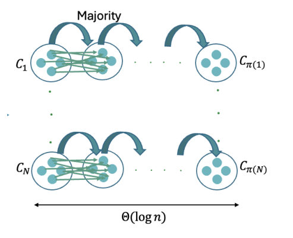
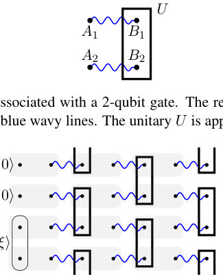
Summary. This paper introduces a novel, viable template for quantum locality-preserving gap amplification, a critical missing piece for proving the quantum PCP conjecture. By showing how to amplify the gap of local Hamiltonians while controlling locality, the authors provide a major theoretical advance in quantum complexity theory. This work bridges classical PCP techniques into the quantum domain using advanced concepts from quantum coding and fault-tolerant computation.
Why it may be interesting. The development of locality-preserving gap amplification is a crucial theoretical tool for quantum complexity theory, providing a pathway to tackle the quantum PCP conjecture by importing a key classical ingredient.
Main problem. The paper addresses the challenge of translating the classical PCP theorem into the quantum setting, specifically by developing a method for locality-preserving gap amplification.
Main result. The authors present the first viable template for quantum locality-preserving gap amplification, proving that this procedure successfully amplifies the combinatorial gap of local Hamiltonians.
Method. The technique combines ideas from classical PCP proofs using high-dimensional expanders and circuit-to-Hamiltonian constructions, focusing on distributing fault-tolerant 'violation information' rather than repeating the witness.
Model / system. The work is framed around local Hamiltonian problems, which are used to model quantum constraint satisfaction problems (CSPs) and are central to the quantum PCP conjecture.
Key observables. Combinatorial energy ($\epsilon$), ground energy, and the gap of the local Hamiltonian.
Important parameters / regimes. The gap regime (low-gap vs. high-gap) dictates the polynomial scaling of the required qudit dimension and log-alphabet size.
Assumptions / limitations. The analysis relies on developing novel techniques for fault-tolerant computation and assumes the existence of asymptotically good quantum locally testable codes (qLTCs) for certain bounds.
Paper structure. The paper builds conceptually by first establishing the necessity of locality-preserving gap amplification for the quantum PCP conjecture, then presenting the template using existing tools (HDX, circuit-to-Hamiltonian), and finally detailing the resulting combinatorial soundness proof.
The quantum PCP conjecture is one of the major open problems in quantum complexity theory. It has resisted attack in part because many primitives used in the proof of the classical PCP theorem, such as locality-preserving gap amplification and alphabet reduction, have no obvious quantum analogues due to quantum no-cloning. Locality-preserving gap amplification is a procedure that takes as input a local Hamiltonian problem instance and produces a new instance with a larger promise gap, without increasing the locality of the Hamiltonian, and instead moderately increasing its local qudit dimension. Obtaining this kind of control over the locality during gap amplification is critical to the success of many known strategies for proving the classical PCP theorem. In this work, we put forth the first known viable template for quantum locality-preserving gap amplification, and we prove that our procedure amplifies the combinatorial gap of local Hamiltonians. Our work introduces a new framework for reasoning about quantum gap amplification in terms of fault-tolerant computation, and illuminates a route toward importing one of the central ingredients in classical PCPs into the quantum setting. In particular, we build upon ideas from the recent classical PCP of Bafna--Minzer--Vyas based on high-dimensional expanders, and the circuit-to-Hamiltonian construction of Anshu--Breuckmann--Nguyen, in addition to several recent advances in quantum coding theory.
Authors: B. Hamil, R. Boudjouraf, A. Benchikha, M. Merad
Type: theory · Category: statistical mechanics · PDF: https://arxiv.org/pdf/2610.04322v1
Analysis basis: full PDF text, analyzed in chunks
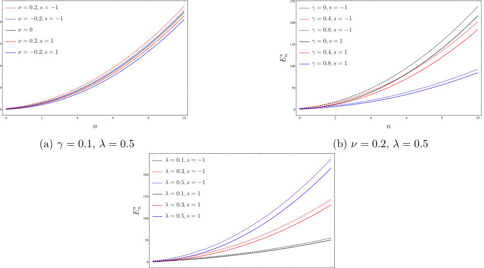
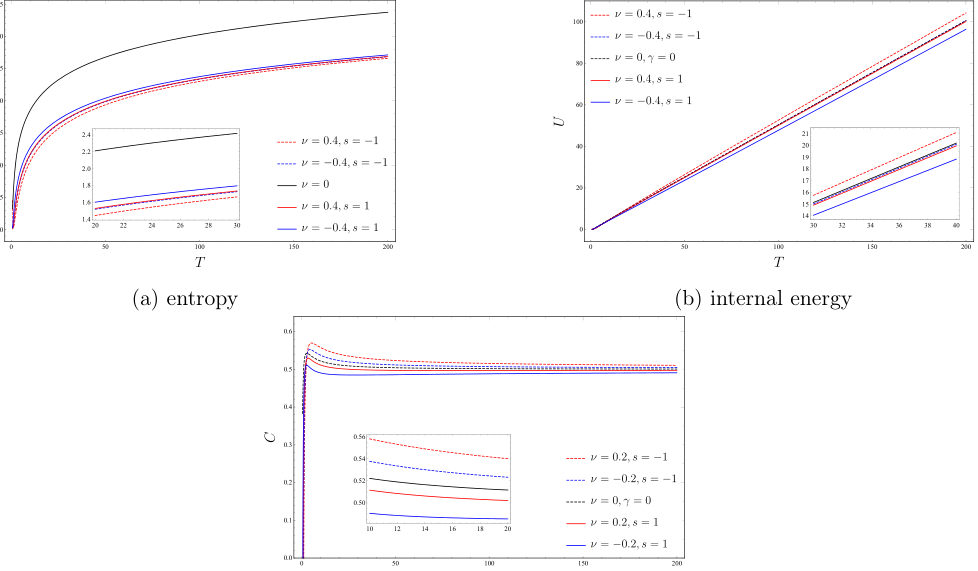
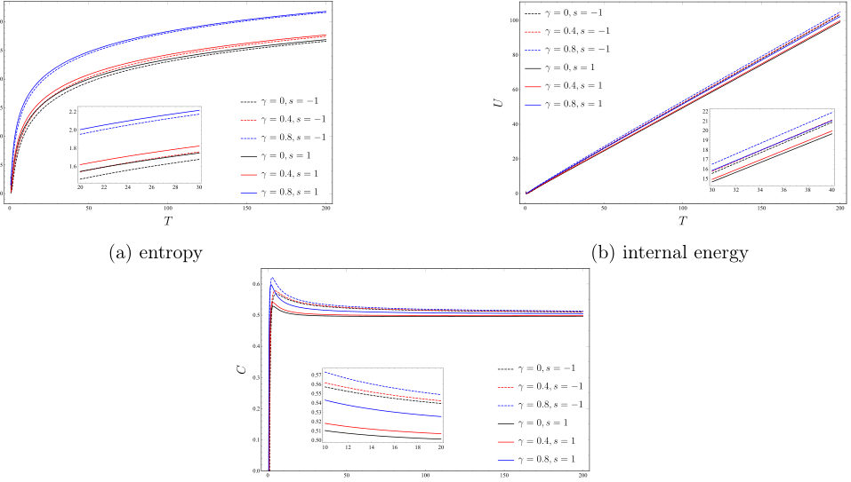
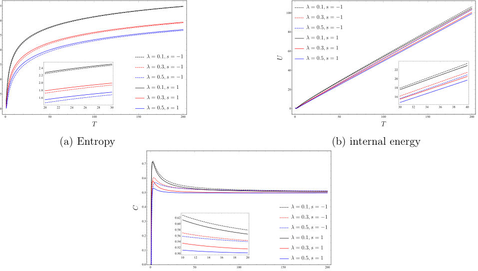
Summary. This work develops a theoretical framework for generalized Dunkl quantum systems featuring energy-dependent interactions. It successfully derives the energy spectrum and analyzes the system's thermodynamic properties, showing that the deformation and energy-dependence parameters offer tunable control over both quantum and thermal characteristics.
Why it may be interesting. The combination of exactly solvable models (Dunkl systems) with non-standard interactions (energy-dependent potentials) provides a rich theoretical playground for studying how complex physical effects manifest in both quantum spectra and macroscopic thermal behavior.
Main problem. The paper investigates the exact solvability and thermodynamic properties of quantum systems incorporating generalized Dunkl operators and energy-dependent interactions.
Main result. The study derives explicit analytical expressions for the energy spectrum, partition function, internal energy, and entropy, demonstrating that the generalized framework allows effective control over spectral and thermal characteristics.
Method. The analysis combines solving the generalized Dunkl Schrödinger equation for stationary states with applying the Euler-Maclaurin summation formula to calculate the canonical partition function.
Model / system. The model is a one-dimensional quantum system governed by a generalized Dunkl-Schrödinger equation, featuring an energy-dependent potential and incorporating parameters like the Wigner ($ u$) and deformation ($\gamma$) parameters.
Key observables. Energy spectrum ($E_{s,n}$), probability density ($ ho$), probability current ($J$), internal energy ($U$), entropy ($S$), and specific heat ($C_K$).
Important parameters / regimes. Wigner parameter ($ u$), deformation parameter ($\gamma$), and energy-dependence parameter ($\lambda$).
Assumptions / limitations. The analysis requires the condition $|\gamma| < 1$ for a real spectrum, and the thermodynamic calculations rely on the Euler-Maclaurin approximation up to $p=2$.
Figures summary. Figures illustrate the variation of the energy spectrum with quantum number $n$ for varying $ u$, $\gamma$, and $\lambda$. Other figures show the influence of $ u$, $\gamma$, and $\lambda$ on $S$, $U$, and $C_K$ respectively.
Paper structure. The paper first establishes the generalized Dunkl formalism and derives conservation laws. It then solves the energy spectrum for the energy-dependent harmonic oscillator. Finally, it calculates the thermodynamic properties using the partition function and analyzes the results based on the key parameters.
This work investigates a class of exactly solvable quantum systems described by a generalized Dunkl--Schrödinger equation with energy-dependent interactions. A two-parameter extension of the Dunkl differential operator is introduced, incorporating both the conventional reflection contribution and an additional derivative-reflection coupling. The resulting formalism leads to a modified Heisenberg algebra, from which the continuity equation, conserved probability current, and generalized normalization condition are derived for energy-dependent potentials. As an application, an energy-dependent harmonic oscillator is studied in detail. Exact analytical expressions for the eigenfunctions and energy spectrum are obtained in terms of associated Laguerre polynomials. The combined effects of the Wigner parameter, the deformation parameter, and the energy-dependence parameter are shown to produce parity splitting, nonlinear energy spectra, and nonuniform level spacing while preserving exact solvability. The thermodynamic properties of the model are then examined through the canonical partition function using the Euler--Maclaurin summation formula. Analytical expressions for the partition function, internal energy, entropy, and specific heat are derived and analyzed numerically. The results demonstrate that the generalized Dunkl deformation and energy-dependent interaction provide effective control over both the spectral and thermal characteristics of the system, extending the class of exactly solvable quantum models with reflection symmetry.
Authors: Jia-Cheng Li, Ying-Je Lee, Yu An Cheng, Yu-Hsiang Fu, Xuan-Fu Huang, Yu-Jie Zhong, Ion Cosma Fulga, Carmine Ortix, Ching-Hao Chang
Type: theory · Category: other · PDF: https://arxiv.org/pdf/2610.05881v1
Analysis basis: full PDF text, analyzed in chunks
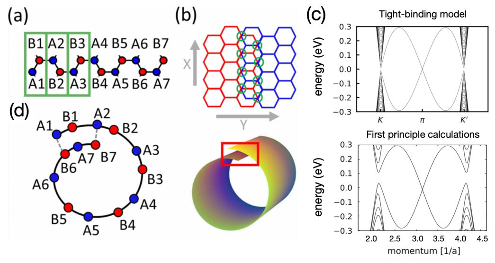
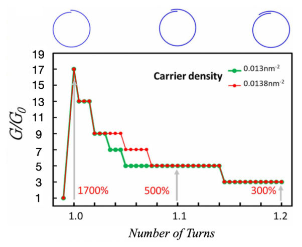
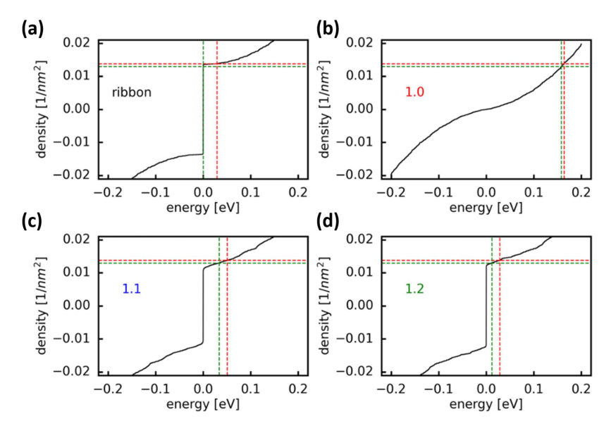
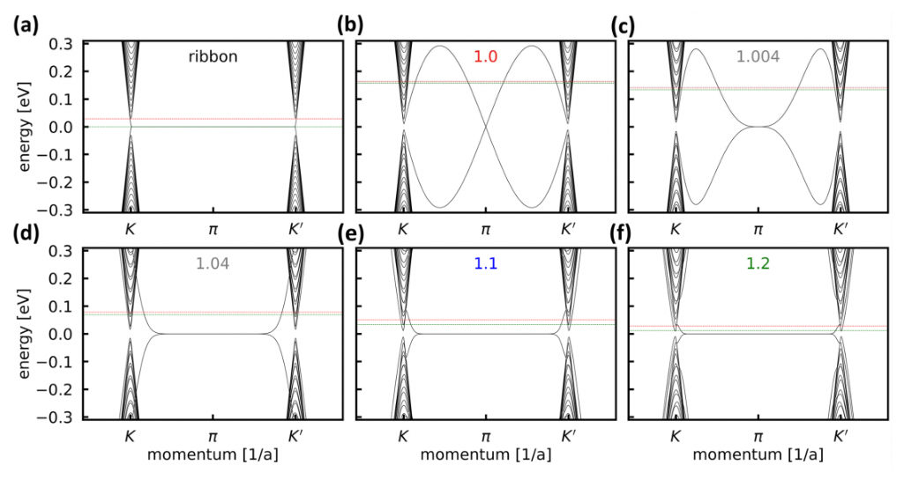
Summary. This theoretical work demonstrates that rolling graphene nanoribbons into few-turn nanoscrolls dramatically enhances their electrical conductance by nearly an order of magnitude. This effect is fundamentally linked to interlayer hopping, which reconstructs localized edge states into highly conductive one-dimensional channels. The research establishes the nanoscroll's turn number as a tunable knob for engineering quantum electronic states.
Why it may be interesting. The mechanism—where geometric curvature induces a topological transition that enhances quantum conductance—is highly relevant to understanding engineered quantum transport in low-dimensional carbon materials, which shares principles with quantum confinement in nanoscale devices.
Main problem. The paper investigates the mechanism behind a giant enhancement in the longitudinal conductance of graphene nanoscrolls (GNSs) compared to flat graphene ribbons.
Main result. Rolling the graphene nanoribbon into a few-turn nanoscroll (1.0-1.2 turns) triggers a giant, geometry-driven conductance enhancement, which scales inversely with the number of turns.
Method. The study employs a tight-binding approach, supplemented by continuum models and comparisons with DFT calculations, using the Landauer formula to calculate quantum conductance.
Model / system. The physical system is a graphene nanoscroll, modeled as a radial superlattice formed by rolling a graphene nanoribbon. The Hamiltonian includes both intralayer and interlayer hopping terms, with the interlayer coupling being key to the observed electronic reconstruction.
Key observables. Longitudinal conductance (showing up to 1700% enhancement), Fermi energy shift, and the number of active conduction channels.
Important parameters / regimes. The nanoscroll turn number (1.0-1.2 turns), the interlayer hopping parameter (gamma_1), and the temperature scale relative to the subband spacing (k_B T vs Delta E).
Assumptions / limitations. The analysis assumes a perfectly ballistic transport regime and relies on the validity of the tight-binding and continuum models for describing the interlayer coupling.
Figures summary. Figures illustrate the unit cell structure and band structures for different turn numbers, showing the evolution of the Fermi level and carrier density distribution as the ribbon rolls into a scroll.
Paper structure. The paper progresses by establishing the physical model (GNS geometry), deriving the Hamiltonian incorporating interlayer coupling, calculating the conductance using Landauer formalism, and finally analyzing how the turn number dictates the electronic structure and resulting transport properties.
Graphene nanoscrolls form a unique radial superlattice whose geometry enables transport behaviors distinct from their flat counterparts. We theoretically demonstrate that rolling a graphene nanoribbon into a few-turn nanoscroll (1.0-1.2 turns) triggers a giant enhancement in longitudinal conductance by an order of magnitude (nearly twentyfold). We show that this effect stems from interlayer hopping between open boundaries, which not only transforms localized edge states into one-dimensional-like conducting channels and also induces a significant Fermi energy shift. Our results reveal an inverse scaling of conductance with turn number, establishing GNSs as a platform for geometry-driven quantum transport and offering a tunable approach to engineering nanoarchitectural electronic states.
Authors: Pulkit Sinha, Benjamin Lovitz
Type: theory · Category: quantum information and computing · PDF: https://arxiv.org/pdf/2610.06819v1
Analysis basis: full PDF text, analyzed in chunks
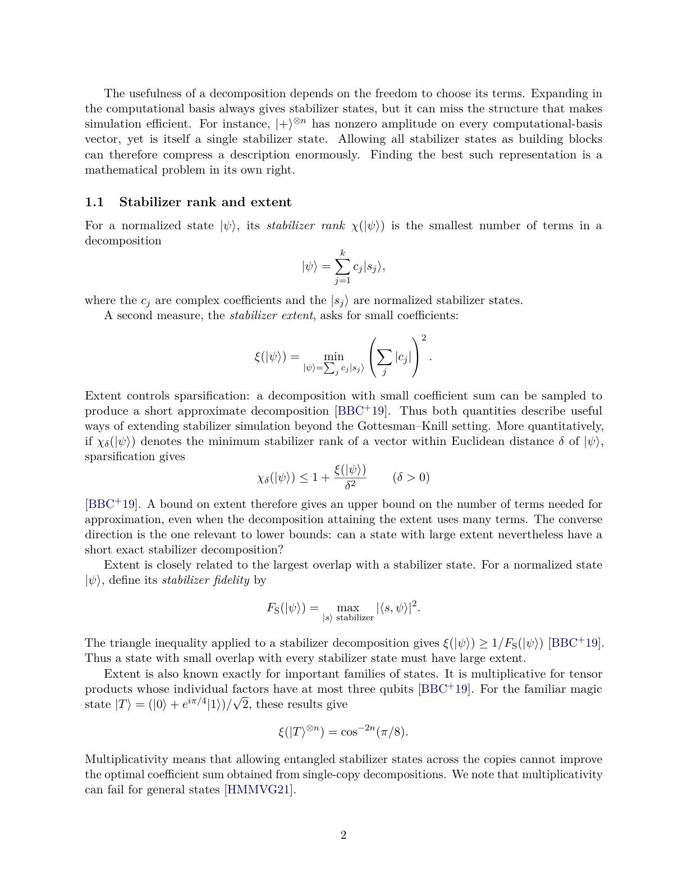
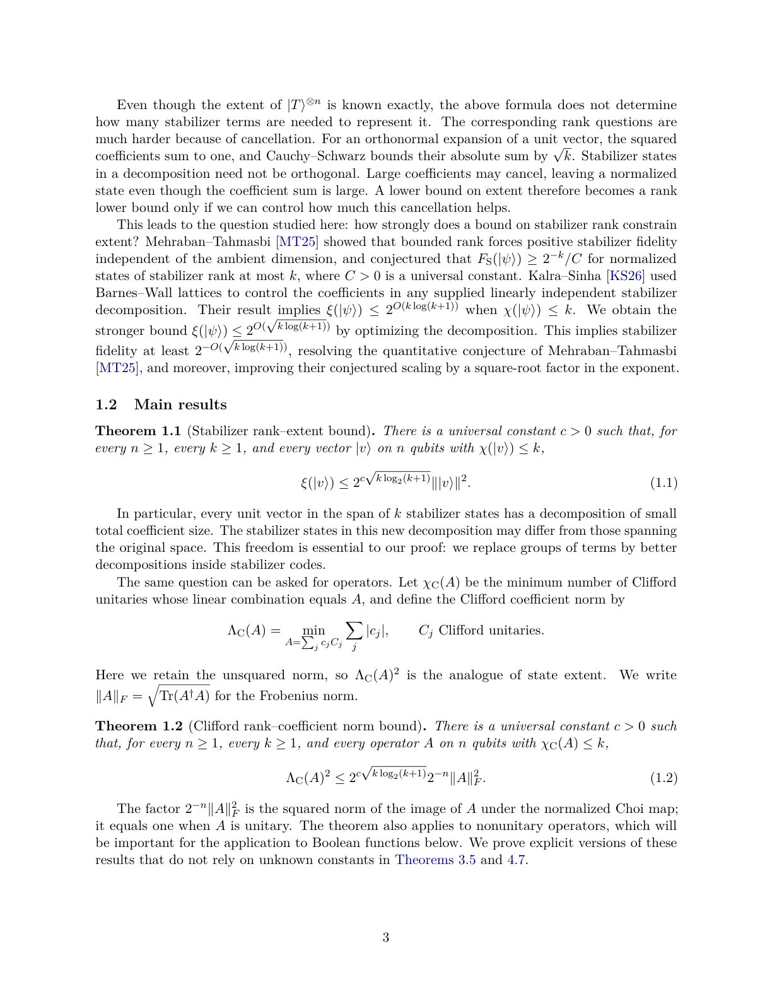
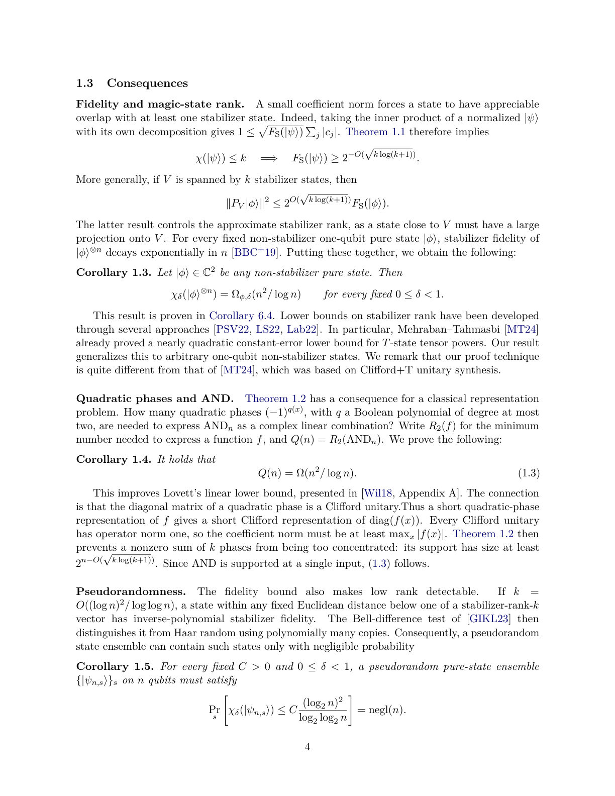
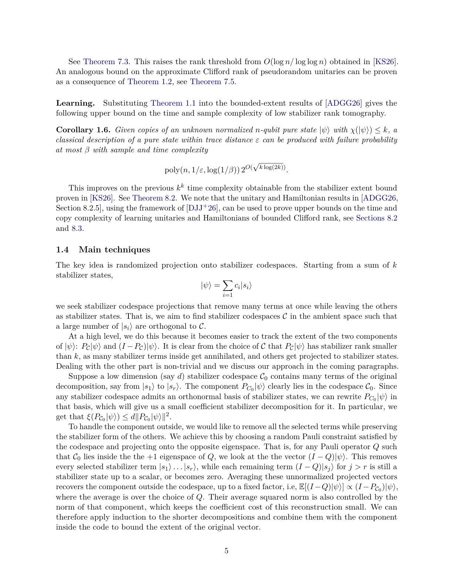
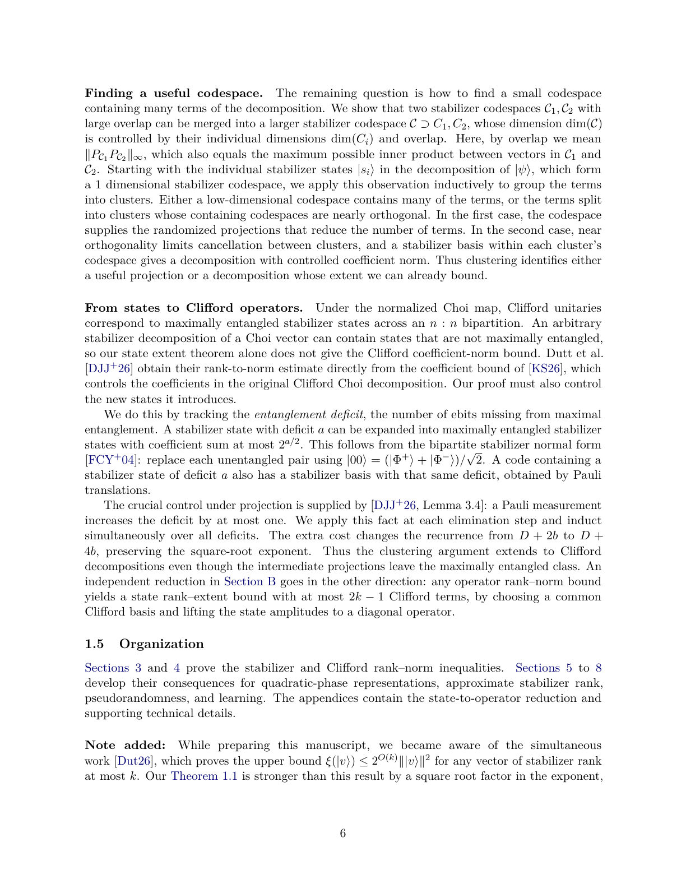
Summary. This theoretical paper establishes significantly improved quantitative bounds connecting the stabilizer rank of quantum states and operators to their respective extents and Clifford ranks. By proving these bounds, the authors derive new lower bounds for the complexity of quantum states, such as tensor powers, and provide tighter characterizations of pseudorandom quantum ensembles. This work advances the understanding of resource quantification in quantum information theory.
Why it may be interesting. The derived bounds provide concrete, improved quantitative measures of quantum state complexity, which are crucial for understanding the limits of quantum computation and simulation.
Main problem. The paper aims to establish improved quantitative bounds relating the stabilizer rank ($\chi$) of quantum states and operators to their respective 'extent' ($\xi$) and Clifford rank ($\chi_C$).
Main result. It proves that for a state of stabilizer rank $k$, its extent is bounded by $2^{O(\sqrt{k\log(k+1)})}$, and derives lower bounds for the approximate stabilizer rank of tensor powers of non-stabilizer states.
Method. The authors use techniques involving decomposing states into stabilizer components, applying randomized projections, and relating operator bounds to state bounds via the Choi map formalism.
Model / system. The focus is on quantum states and operators acting on $n$ qubits, specifically analyzing the structure and complexity of stabilizer states and general non-stabilizer states.
Key observables. Stabilizer Rank ($\chi$), Stabilizer Extent ($\xi$), Clifford Rank ($\chi_C$), and Stabilizer Fidelity ($F_S$).
Important parameters / regimes. The rank $k$ (the maximum allowed stabilizer rank) and the number of qubits $n$.
Assumptions / limitations. The analysis relies on the ability to decompose states into sums of stabilizer states and the use of specific projection techniques to control the coefficients.
Paper structure. The paper builds from establishing the core quantitative bounds (Theorem 1.1 and 1.2) relating rank to extent/norm, which are then leveraged to prove lower bounds for state complexity (tensor powers, AND function) and characterize pseudorandomness.
We prove that every pure state of stabilizer rank at most $k$ has stabilizer extent at most $2^{O(\sqrt{k\log(k+1)})}$, and establish the analogous bound for the squared Clifford coefficient norm of Clifford-rank-$k$ operators. This implies stabilizer fidelity at least $2^{-O(\sqrt{k\log(k+1)})}$, resolving the quantitative conjecture of (Mehraban-Tamasbi, STOC, 2025), and proves an $Ω(n^2/\log n)$ lower bound for the approximate stabilizer rank of tensor powers of any non-stabilizer qubit state. The latter result generalizes the best-known lower bound for tensor powers of $T$-states (Mehraban-Tamasbi, STOC, 2024) to arbitrary non-stabilizer qubit states, including magic states. As a consequence of the Clifford rank--norm inequality, we obtain an $Ω(n^2/\log n)$ lower bound for exact representations of $n$-bit AND function by quadratic phases, improving the previous best-known linear bound. Further consequences rule out pseudorandom state and unitary ensembles with approximate stabilizer and Clifford rank $O((\log n)^2/\log\log n)$, respectively, a $\log n$ improvement over prior work (Kalra-Sinha, Quantum, 2026). We also obtain tomography algorithms for states of stabilizer rank at most $k$, with $poly(n)2^{O(\sqrt{k\log(k+1)})}$ time and copy complexity, a nearly square-root improvement in the exponent over the best-known algorithm.
Authors: Ritam Bhaumik, Yu-Hsuan Huang
Type: theory · Category: other · PDF: https://arxiv.org/pdf/2610.04674v1
Analysis basis: full PDF text, analyzed in chunks
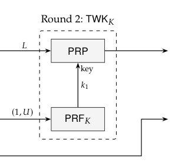
Summary. This paper develops a general theorem to lift quantum indistinguishability proofs from base oracles to complex keyed oracles, overcoming limitations in prior work regarding statefulness. It applies this theorem to construct a quantum-secure compressed ideal cipher and to extend the message length of strong pseudorandom permutations. The work advances the theoretical understanding of quantum cryptographic security proofs.
Why it may be interesting. While highly theoretical and cryptographic, the techniques used—such as polynomial methods and bounding quantum advantage—share mathematical rigor with quantum information theory, particularly in complexity analysis.
Main problem. The paper addresses the challenge of proving quantum indistinguishability for keyed oracles that are composed of many independent instances of a base oracle, especially when the base oracles are stateful.
Main result. They establish a generic indistinguishability lifting theorem showing that if base oracles are indistinguishable, the keyed oracles are too, up to an $O(q^2)$ loss. This is applied to create an efficiently implementable compressed ideal cipher.
Method. The core method is the development of the lifting theorem, which transforms the problem of distinguishing keyed oracles into distinguishing the underlying base oracles. Applications involve modular constructions and polynomial-method arguments.
Model / system. The model is purely cryptographic, focusing on quantum query complexity, ideal cipher models, and compressed permutation oracles. It does not describe a physical Hamiltonian or quantum system.
Key observables. Distinguishing advantage ($\epsilon$), number of queries ($q$), and the security loss factor ($O(q^2)$).
Important parameters / regimes. The number of queries ($q$) and the message space size ($n$) are key parameters determining the security bounds.
Assumptions / limitations. The theorem assumes the existence of a base oracle whose indistinguishability can be established, and it applies to both statistical and computational settings.
Figures summary. Figure 1 illustrates the domain extension of a PRP from $n$-bit to $2n$-bit messages. Figure 3 illustrates the structure of the oracle $O_b$ used for lifting hardness, detailing 'read' and 'challenge' modes.
Paper structure. The paper introduces the lifting theorem, proves its optimality, and then presents two major applications: first, constructing a compressed ideal cipher; and second, providing a modular construction to double the message length of quantum-secure strong pseudorandom permutations.
Cryptographic security proofs often involve an adversary interacting with a larger, keyed oracle that consists of (potentially exponentially) many independent instances of a smaller, base oracle. However, showing quantum indistinguishability between two such keyed oracles can be tricky, since a single query made by an adversary may involve a superposition that covers all instances of the base oracles simultaneously. In this paper, we establish a generic indistinguishability lifting theorem of the following form: if the two base oracles are indistinguishable under quantum queries, then their corresponding keyed oracles are too, up to an O(q^2) multiplicative loss in distinguishing advantage, where q is the number of queries made by the adversary. Our lifting theorem applies to both statistical and computational settings, and to oracles that are stateful as well. It is also optimal in that it matches the obvious Grover search attack for a certain (contrived) choice of oracles. As an immediate application, we extend Carolan's compressed permutation oracle to an efficiently implementable compressed ideal cipher, and use it to prove preimage resistance of the Davies-Meyer compression function in the quantum ideal cipher model. Thanks to our lifting theorem, the soundness of our compressed ideal cipher reduces to that of Carolan's oracle, and any further improvement on the latter would automatically carry over to the former. As our second application, we give a modular construction that doubles the message length of any quantum-secure strong pseudorandom permutation. Along the way, we show that an existing two-round tweakable Feistel construction is indistinguishable from a random permutation under quantum bidirectional queries. This is done via a dedicated polynomial-method argument, which may be of independent interest.
Authors: Marco Pompili, Mirjam Weilenmann
Type: theory · Category: quantum information and computing · PDF: https://arxiv.org/pdf/2610.06604v1
Analysis basis: full PDF text, analyzed in chunks
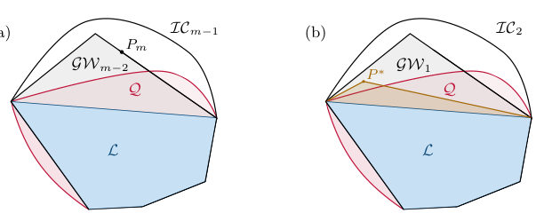
Summary. This paper rigorously proves that Information Causality (IC), a proposed physical constraint on non-local correlations, is not strong enough to fully characterize quantum correlations. By constructing explicit counterexamples in Bell scenarios, the authors demonstrate that correlations satisfying IC can exist that are fundamentally non-quantum. This has significant implications for understanding the limits of information-theoretic characterizations of quantum mechanics.
Why it may be interesting. This work challenges fundamental assumptions about the physical constraints governing non-local correlations, which is central to quantum information theory and device-independent quantum cryptography.
Main problem. The paper investigates whether the physical principle of Information Causality (IC) is sufficient to uniquely characterize the set of quantum correlations in Bell scenarios.
Main result. The authors prove that IC does not single out the set of quantum correlations by constructing specific correlation sets that satisfy IC but are demonstrably outside the set of quantum correlations.
Method. The analysis uses information-theoretic tools, specifically entropic constraints (Shannon mutual information) applied to generalized probabilistic theories (GPTs) in the context of multi-copy Bell tests.
Model / system. The study focuses on bipartite correlations in a Bell scenario, parameterized by the number of inputs ($m$) and outputs ($d$), and extends to multi-copy protocols ($n$).
Key observables. Information Causality constraints ($IC(m,d)_n$), quantum correlations ($\mathcal{Q}(m,d)$), and various information quantities like mutual information and conditional entropy.
Important parameters / regimes. The database size $n$ (number of inputs/copies) and the number of outcomes $d$ are key parameters in the Bell test setup.
Assumptions / limitations. The analysis is often restricted to the $(m, m, d, d)$ case for simplicity, and the results are based on constructing specific counter-example correlation sets.
Figures summary. Figures illustrate the notation for $n$-dit random-access codes and show specific examples of correlation sets ($P^*$) that satisfy IC but lie outside the quantum set $\mathcal{Q}$.
Paper structure. The paper progresses by first defining the IC constraint, then presenting results showing that finite-length and single-copy IC are insufficient, culminating in the construction of a general counterexample in the 3-input, 2-outcome setting.
Information causality (IC) was introduced as a physical principle that imposes constraints on the non-local correlations between two parties (Alice and Bob) in a Bell scenario. Specifically, it states that the information that Bob can gain about an $n$-bit database held by Alice is bounded by the information she communicates to him. To date, the question whether IC for any $n \in \mathbb{N}$ singles out the set of quantum correlations remains open, meaning that it is unknown whether for any number of inputs $m$ and outputs $d$ of the two parties the set of correlations that satisfy IC exactly coincides with the quantum correlations. In this work, we answer this question in the negative. Firstly, we show that for any finite database length $n \geq 2$, there is a bipartite set of correlations that satisfies IC for all compatible protocols and that exhibits post-quantum correlations in the Bell scenario with $n+1$ inputs and $2$ outcomes per party. This result relies on constructing an entropic proof of IC for GPTs that may be of independent interest. We further show that in the Bell scenario with $n+1$ inputs and $2$ outcomes per party, our constructed sets of correlations lead to neither a superset nor a subset of the quantum correlations. Secondly, we construct a set of correlations in the Bell scenario with $3$ inputs and $2$ outputs per party that satisfies IC (for all database sizes $n \in \mathbb{N}$) and that includes post-quantum points. Consequently, all known formulations of information causality fail to fully characterize the bipartite set of quantum correlations, already in the $3$-input, $2$-outcome Bell scenario.
Authors: H. W. Shawn Liew, Patrick Rebentrost
Type: theory · Category: other · PDF: https://arxiv.org/pdf/2610.06779v1
Analysis basis: full PDF text, analyzed in chunks
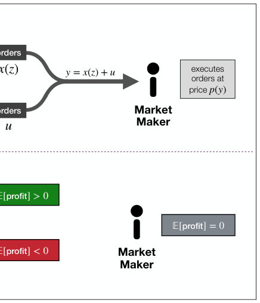
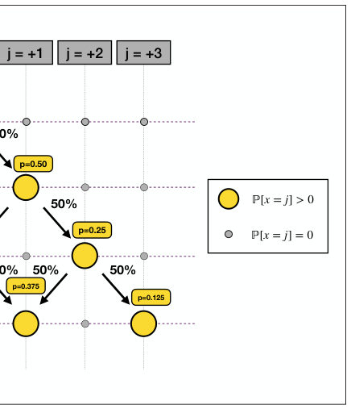
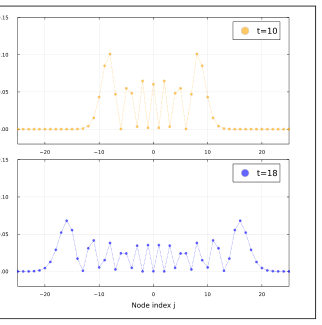
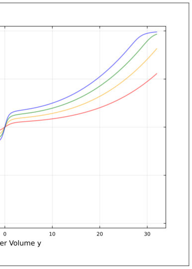
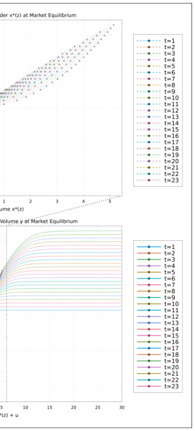
Summary. This paper applies quantum walk theory to the classic Kyle model of informed trading to determine market equilibrium. It contrasts the results with the classical random walk case, finding that the quantum setting leads to a linear growth rate in the informed trader's profit. This highlights how quantum mechanical principles can drastically alter predictions in complex economic systems.
Why it may be interesting. It provides a concrete, non-standard application of quantum walk theory to a complex financial model, demonstrating how quantum dynamics fundamentally alter equilibrium predictions compared to classical diffusion.
Main problem. The paper studies the market equilibrium in an informed trading model (Kyle model) by comparing the dynamics when the asset's future value is governed by a classical random walk versus a continuous-time quantum walk.
Main result. The quantum equilibrium leads to a significantly different outcome than the classical one, notably resulting in the informed trader's profit growing linearly with time, compared to sub-linear growth classically.
Method. The authors use analytical approximations (e.g., Neumann's addition theorem) and numerical fixed-point iteration to solve for the market equilibrium $(x^*, p^*)$ in both classical and quantum settings.
Model / system. The core model is the Kyle model for price impact. The quantum component involves a continuous-time quantum walk on a line ($\mathbb{Z}$) governed by a specific Hamiltonian, whose probability distribution is related to Bessel functions.
Key observables. Informed trader's strategy ($x^*$), market maker's pricing rule ($p^*$), and the average profit per round for both parties.
Important parameters / regimes. Time ($t$), the quantum walk Hamiltonian parameters, and the market parameters defining the Kyle model.
Assumptions / limitations. The analysis relies on approximating the quantum walk evolution using Taylor expansions for small time steps ($\epsilon \ll 1$), and the numerical simulations are restricted to finite time intervals.
Figures summary. Figures illustrate the comparison between classical and quantum probabilities, showing the non-linear pricing rule in the quantum case, and plotting the average profit growth over time for both models.
Paper structure. The paper establishes the model, derives the classical and quantum dynamics for the asset price, uses fixed-point iteration to find the equilibrium, and then compares the resulting profit growth rates and strategies.
The seminal Kyle model offers a framework to understand the price impact of an informed trader in a market model for a single asset. We study variants in which the asset's future value is modeled by a classical random walk and by a continuous-time quantum walk, respectively. With these assumptions, we analytically approximate and numerically identify the market equilibrium between risk-neutral market maker and informed trader. In the classical equilibrium, the informed trader possesses a linear strategy, whereas the market maker's pricing rule resembles a logistic curve. The informed trader's profit is also identified to grow sub-linearly with time t. In the quantum equilibrium, the informed trader's strategy forms multiple clusters and the pricing rule exhibits multiple jumps correspondingly. Despite the increasing non-linearity of the equilibrium, the informed trader's profit grows linearly with time t.
Authors: Juan Cruz-Benito
Type: theory · Category: quantum information and computing · PDF: https://arxiv.org/pdf/2610.06623v1
Analysis basis: full PDF text, analyzed in chunks
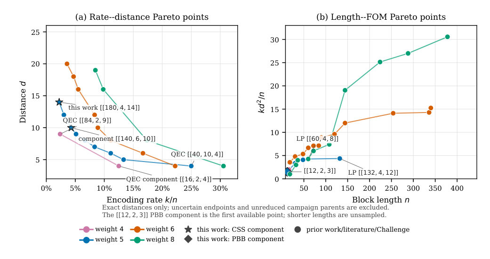
Summary. This work details the discovery and rigorous characterization of specific quantum error-correcting codes (BB and PBB) using a novel search protocol guided by Large Language Models. The LLM-guided search successfully generated a large catalogue of code proposals, achieving a high certified yield of codes with large minimum distances. This advances the field by providing a reproducible, AI-assisted structural account of these complex quantum codes.
Why it may be interesting. The integration of LLMs into the discovery process for highly structured mathematical objects like quantum codes represents a significant methodological advance for theoretical quantum information scientists.
Main problem. The paper focuses on the discovery and detailed characterization of weight-five bivariate bicycle (BB) and perturbed bivariate bicycle (PBB) quantum low-density parity-check (qLDPC) codes.
Main result. The LLM-guided search generated a large catalogue of code proposals, with a high percentage (87.18%) of the generated CSS proposals certified to have a distance $d \ge 5$.
Method. The research employs a novel program-evolution workflow guided by Large Language Models (LLMs) to systematically search for and certify quantum error-correcting codes.
Model / system. The system under study is a set of quantum error-correcting codes, specifically CSS and PBB codes, which are analyzed using their stabilizer generators and associated parameters $(k, d, n)$.
Key observables. Code parameters $(k, d, n)$, connectivity (connected vs. disconnected components), and the Figure of Merit (FOM) = $k d^2 / n$.
Important parameters / regimes. Weight-five stabilizer generators, block lengths $72 \le n \le 432$, and the specific code type (BB/PBB).
Assumptions / limitations. The comparison with random controls and established literature constructions (Lin–Pryadko archive) is used to validate the LLM-guided search results.
Figures summary. The notes do not describe specific figures, but mention tables summarizing certification outcomes and structural analysis.
Paper structure. The paper follows a structure of defining the problem (BB/PBB codes), detailing the LLM-guided search methodology, presenting the resulting catalogue size and certification statistics, and concluding with structural and algebraic organization of the best candidates.
Building on our earlier program-evolution workflow guided by large language models (LLMs), we study weight-five bivariate bicycle (BB) and perturbed bivariate bicycle (PBB) codes. The resulting catalogue contains 1,142 distinct code proposals, including 1,081 nonbaseline proposals attributable to LLM-generated programs. Across the catalogue, we certify connected Calderbank--Shor--Steane (CSS) realizations [[96,4,10]], [[140,6,10]], and [[180,4,14]]. A post-search comparison certifies seven imported Lin--Pryadko archive constructions. For leading parameter triples also represented in that archive, we provide exact distance evidence, explicit bivariate presentations, and verified component reductions. A basis-independent connectivity analysis identifies 409 of the 1,142 catalogue entries as disconnected and shows that 73.1\% of the classes with exact distance certificates contain repeated connected components. Algebraic analysis organizes the connected CSS classes into order-3, order-7, and order-15 cyclotomic-kernel strata. The strongest exact connected PBB parameter point is [[216,4,10]], attained by two distinct component classes. Among the 936 distinct CSS proposals from the LLM-guided campaign with a recorded positive distance, 816 (87.18\%) are certified at $d\geq5$. For comparison, three random-search controls each sample 6,444 CSS code proposals uniformly without replacement, using the same per-lattice and encoded-dimension sample counts as the LLM-guided campaign. In these controls, 4,672--4,785 proposals (72.50--74.26\%) meet the same criterion. The LLM-guided campaign has the higher certified yield, while the random controls cover more connected classes. Together, these results extend LLM-guided discovery to a more constrained code family and provide a reproducible structural and exact-distance account of its strongest candidates.
Authors: Silas R. Beane, Roland C. Farrell
Type: theory · Category: quantum information and computing · PDF: https://arxiv.org/pdf/2610.06791v1
Analysis basis: full PDF text, analyzed in chunks
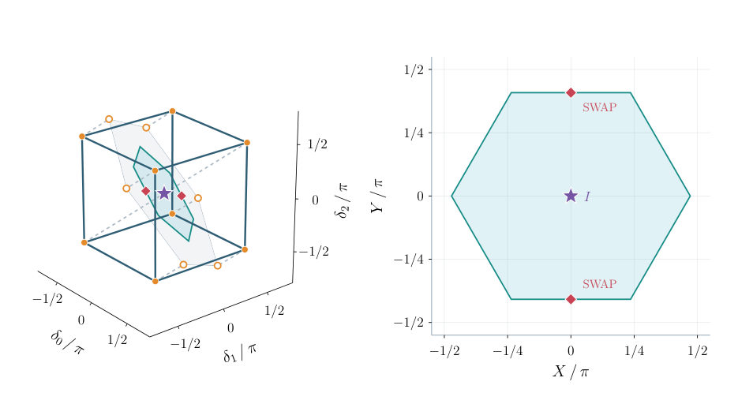
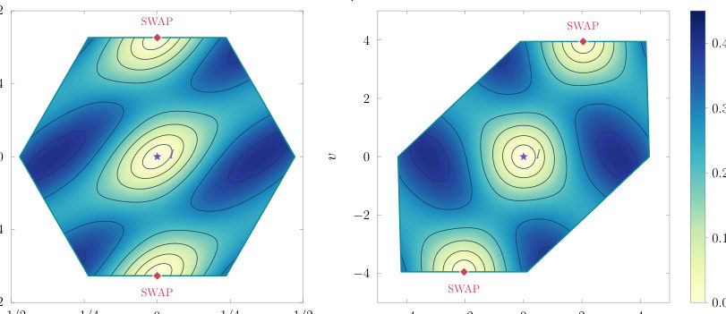
Summary. This theoretical work derives a universal geometric law governing non-local quantum resources generated during elastic scattering. By analyzing the S-matrix near trivial points, the authors prove that both entanglement and non-local magic power scale universally with the squared projective Hilbert-Schmidt distance from the nearest non-resource-generating gate. This establishes a deep connection between the geometry of the scattering process and its quantum resource potential.
Why it may be interesting. The universality result connects fundamental geometric properties (distance in the parameter space) directly to measurable quantum resources (entanglement/magic), providing a powerful, model-independent diagnostic tool for characterizing quantum interactions.
Main problem. The paper investigates the leading non-local resource-generating capacity of elastic scattering processes, comparing measures like entanglement power and non-local magic power.
Main result. It establishes a universal geometric origin for this resource capacity, showing that for rotationally invariant scattering near non-entangling gates, the resource power is proportional to the squared projective Hilbert-Schmidt distance from that gate.
Method. The analysis uses functional derivatives and symmetry arguments (like Schur's Lemma) applied to the S-matrix, relating the resource function's Hessian to the distance metric.
Model / system. The system is elastic scattering between two distinguishable non-relativistic particles of spin J, governed by a unitary S-matrix acting on the joint spin Hilbert space.
Key observables. Entanglement Power ($E_p(S)$), Non-local Magic Power ($ ext{PNL}(S)$), and the Projective Hilbert-Schmidt distance ($\ell$).
Important parameters / regimes. Spin quantum number J, small perturbation parameter $ au$, and the dimension $d$ of the joint Hilbert space.
Assumptions / limitations. The interaction is assumed to be rotationally invariant and of finite range, and the analysis focuses on the local behavior near identity or SWAP gates.
Figures summary. Figures illustrate the geometry of the S-matrix space for J=1, showing how entanglement power contours map onto constant-radius circles when using an appropriate metric.
Paper structure. The paper proceeds by deriving the general entanglement power for arbitrary spin J, then showing the proportionality between entanglement and magic near specific gates, culminating in a proof that the leading resource dependence is universal and quadratic in the distance metric.
Elastic scattering can generate entanglement and non-local magic between the spins of the two outgoing particles. The amount of entanglement and magic produced is encoded in the S-matrix; a unitary quantum gate that acts on the joint Hilbert space of the two spin-J particles. Previous work derived the entanglement power in terms of the scattering phase shifts for rotationally invariant S-matrices with J=1/2,1,3/2. In this paper, a closed form solution is derived for all J. We further prove that a broad class of non-local quantum resources depend to leading order only on the squared projective Hilbert-Schmidt distance from the nearest non-entangling gate. This holds for the entanglement power and non-local magic power, and the choice of resource simply changes the overall normalization. This universality establishes a common geometric origin for the leading resource-generating capacity of scattering, independent of the details of the interaction.
Authors: Andrew Li, Stephen D. Bartlett, Andrew C. Doherty, Campbell K. McLauchlan
Type: theory · Category: quantum information and computing · PDF: https://arxiv.org/pdf/2610.06036v1
Analysis basis: full PDF text, analyzed in chunks
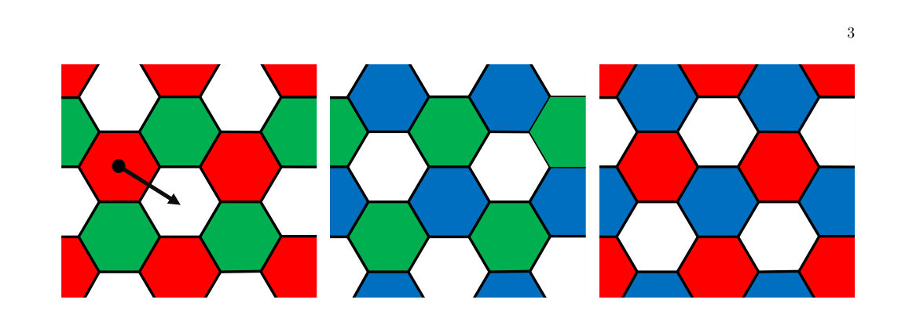
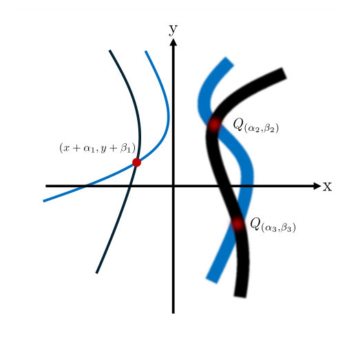
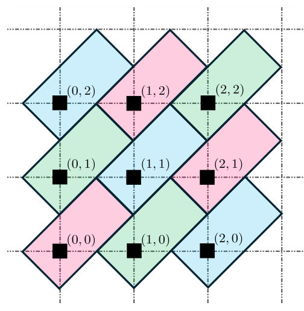
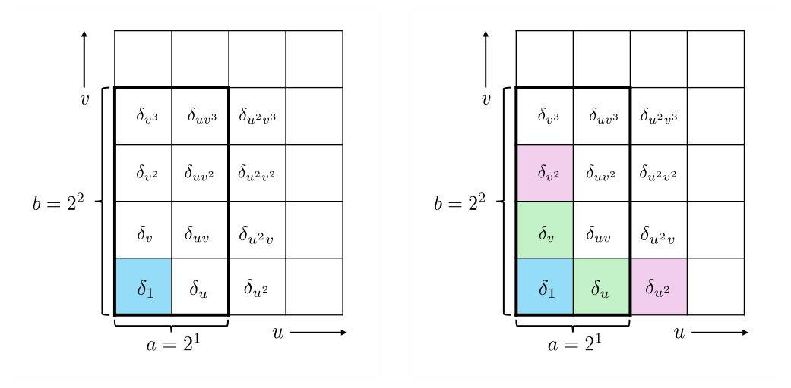
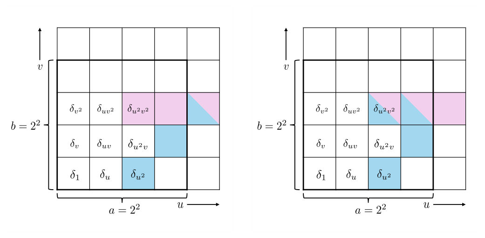
Summary. This paper provides a comprehensive mathematical framework for characterizing the symmetries of 2D translationally invariant quantum error-correcting codes. By decomposing the symmetry space into translation-invariant subspaces, the authors offer a systematic way to determine how these symmetries behave across different finite boundary conditions. This work is crucial for advancing the design and performance analysis of matching-based quantum decoders.
Why it may be interesting. The deep algebraic understanding of symmetries in these codes provides powerful tools for designing and analyzing quantum error correction codes, which is central to fault-tolerant quantum computation.
Main problem. The paper aims to rigorously study the mathematical structure and properties of 'materialised symmetries' within 2D translationally invariant (TI) quantum error-correcting codes.
Main result. The authors develop a framework to decompose the symmetry space into translation-invariant subspaces, providing an explicit, plane-wave-like basis that can be adapted to arbitrary rectangular periodic lattices and even twisted boundaries.
Method. The methodology involves analyzing the code structure using the language of CSS chain complexes over Laurent polynomials, relating symmetries to dual modules, and employing techniques from algebraic topology and module theory.
Model / system. The focus is on 2D translationally invariant quantum error-correcting codes (e.g., bivariate bicycle and color codes) defined on an infinite lattice, analyzed using Haah's formalism.
Key observables. Materialised symmetries, metachecks (subsets of stabilizer checks multiplying to identity), and the decomposition of the symmetry space into irreducible periodic components.
Important parameters / regimes. The lattice dimensions (rectangular periodicity) and the underlying algebraic structure defined by the code generators (A and B).
Assumptions / limitations. The analysis heavily relies on the assumption that the code structure can be modeled by an exact CSS chain complex over the ring of Laurent polynomials.
Figures summary. Figure 1 illustrates the cyclic translation of X or Z symmetries for the hexagonal color code, demonstrating translational periodicity.
Paper structure. The paper progresses by first establishing the algebraic framework using Laurent polynomials, deriving the decomposition of the symmetry space, showing how this infinite basis restricts to finite periodic lattices, and finally discussing extensions to twisted boundaries and applications to matching-based decoders.
There has been significant recent interest in near-term qLDPC codes as high-performance alternatives to surface and color codes. One such class of codes is 2-dimensional translationally invariant (TI) codes, such as bivariate bicycle codes, which share similar properties to topological codes. Fundamental objects in the study of such codes are the materialised symmetries, which can be used for the construction of matching-based decoders. These decoders generalise the minimum-weight perfect matching decoder for toric codes and provide similar asymptotic performance guarantees that heuristic decoders such as BP and its variants lack. Despite this, the mathematical structure of symmetries along with their properties under translation and restriction to finite-sized lattices has not been well-studied. We describe a decomposition of symmetry spaces of 2D CSS TI codes on infinite lattices into translation-invariant subspaces which allow us to write an explicit basis of symmetries in a plane-wave-like form. We then describe how to adapt this infinite lattice basis so that any corresponding rectangular periodic lattice basis can be obtained by restriction to basis elements compatible with the periodic boundaries. This allows us to describe how the symmetry space varies with different rectangular dimensions. We illustrate via examples that it is often straightforward in practice to determine a basis of symmetries on twisted boundaries as well, without needing to recompute the decomposition. We comment on the applications of this framework to matching-based decoders and provide examples of symmetries of such codes as the gross code.
Authors: Yuga Hirai, Yasunari Suzuki
Type: theory · Category: quantum information and computing · PDF: https://arxiv.org/pdf/2610.04613v1
Analysis basis: full PDF text, analyzed in chunks
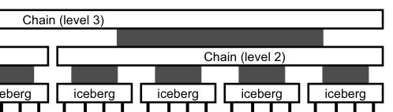
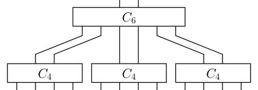
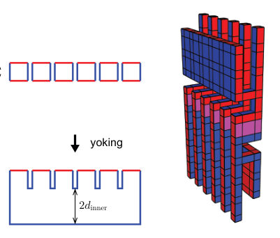
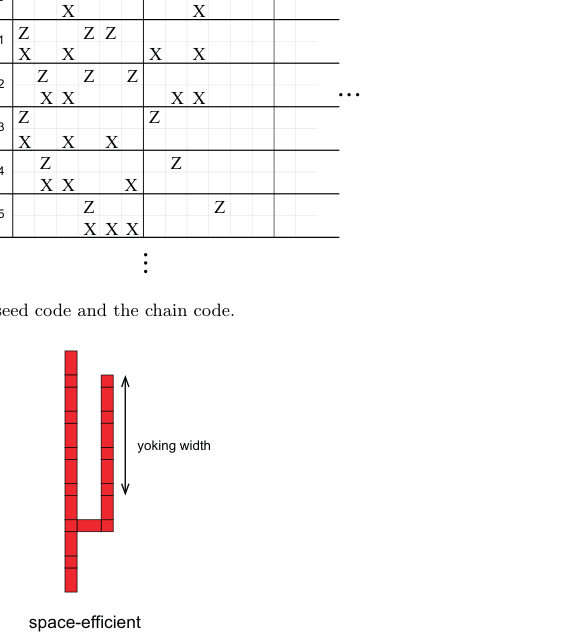
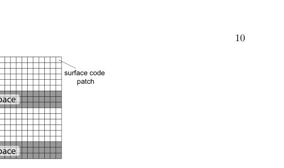
Summary. This paper introduces multi-yoked surface codes to overcome the low encoding rate of standard surface codes. By concatenating multiple high-density outer codes using novel chain codes and hierarchical lattice surgery, the authors significantly boost code density. This advancement is crucial for realizing fault-tolerant quantum computation in the teraquop regime.
Why it may be interesting. This work provides a concrete, high-density blueprint for fault-tolerant quantum computation, directly relevant to building scalable quantum processors by improving qubit resource overheads.
Main problem. The surface code has a low encoding rate, necessitating the development of higher-density quantum error-correcting codes.
Main result. The proposed multi-yoked surface code achieves a density 4 to 4.5 times higher than the unyoked surface code in the teraquop regime while maintaining exponential suppression of the logical error rate.
Method. The authors generalize yoked surface codes by introducing multi-level concatenation using novel 'chain codes' and designing a hierarchical patch allocation scheme via lattice surgery.
Model / system. The work focuses on constructing and analyzing multi-yoked surface codes, which are highly structured quantum error-correcting codes built upon the planar nearest-neighbor surface code.
Key observables. Logical error rate (suppressed exponentially), code density (physical qubits per logical qubit), and encoding rate ($k/n$).
Important parameters / regimes. Teraquop regime, inner code distance ($d$), and the number of yoking levels (e.g., three-yoked).
Assumptions / limitations. The analysis assumes cold storage (omitting load/store qubits) and relies on the feasibility of two-stage decoding, which is noted as a future challenge.
Figures summary. Figures illustrate the progression from surface to multi-yoked codes, compare logical error rates across different code types (e.g., three-yoked vs. hex-grid), and show the full yoking schedule detailing the hierarchy of checks.
Paper structure. The paper first establishes the limitations of the standard surface code, then introduces the concept of yoking, generalizes this to multi-yoking using chain codes, details the lattice surgery mechanism for syndrome extraction, and concludes with numerical benchmarking of the three-yoked code.
The surface code is the leading candidate for fault-tolerant quantum computation owing to its planar nearest-neighbor connectivity, high threshold, and efficient decoding, but its low encoding rate demands on the order of a thousand physical qubits per logical qubit in the teraquop regime. Yoked surface codes improve the density by a factor of two or three by concatenating a high-density parity check code on top of the surface code while retaining planar nearest-neighbor connectivity. In this work, we generalize this idea to multiple levels of concatenation and introduce multi-yoked surface codes. Our construction rests on two new ingredients. First, we propose a family of outer codes called chain codes, built by chaining copies of a seed code that detects the block errors of the code one level below; the resulting codes use all logical qubits of the lower level and achieve a high encoding rate within a few concatenation levels. Second, we design a patch allocation in which movable workspaces perform the yoking checks by lattice surgery with a hierarchy of yoking intervals, so that lower-level checks are performed frequently while higher-level checks are performed less often, which avoids the long yoking intervals that a single large-distance outer code would require. As a benchmark, we construct a three-yoked surface code with a $[[256,166,8]]$ outer code and evaluate it numerically under the SI1000 noise model using soft information from the surface code decoder. The logical error rate is suppressed exponentially in the inner code distance, and in the teraquop regime the three-yoked surface code is about 4 to 4.5$\times$ denser than the unyoked surface code.
Authors: Christine Li, Natalie Parham
Type: theory · Category: quantum information and computing · PDF: https://arxiv.org/pdf/2610.06826v1
Analysis basis: full PDF text, analyzed in chunks
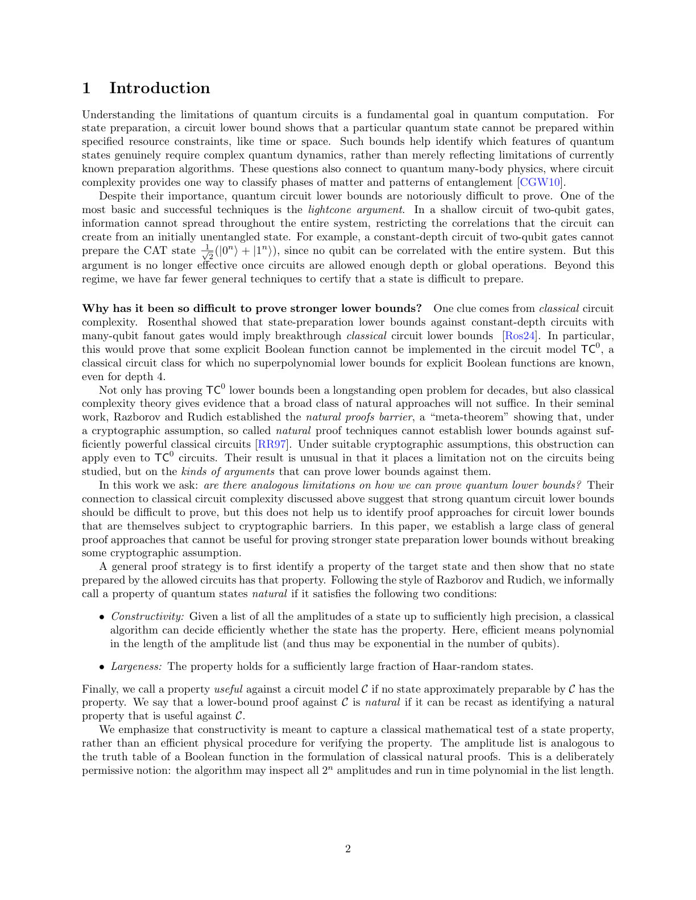
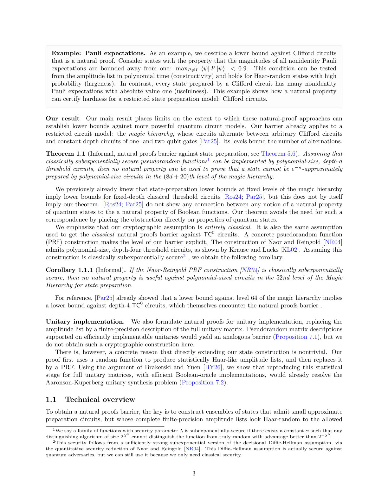
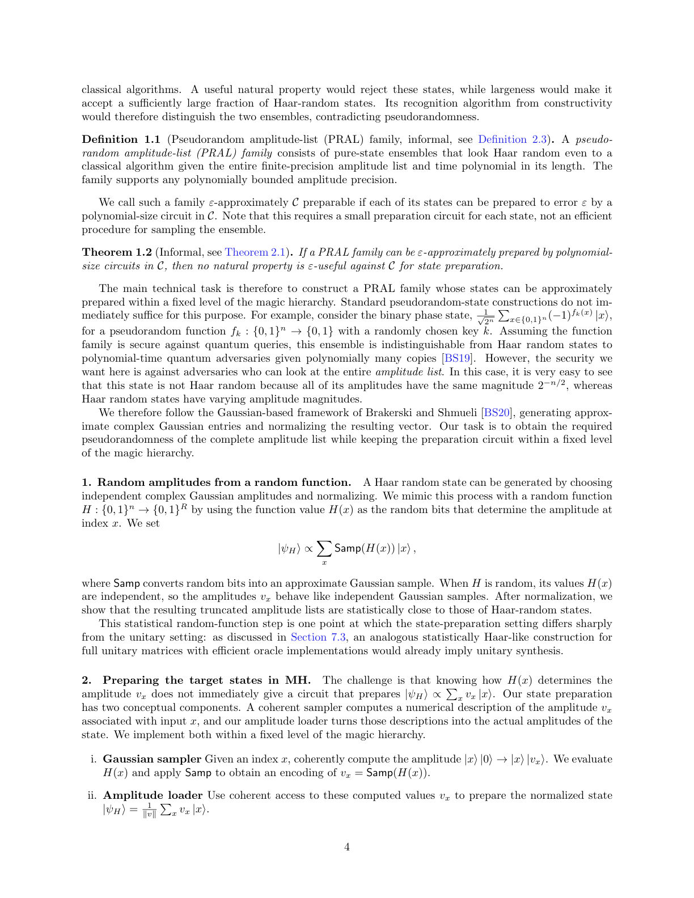
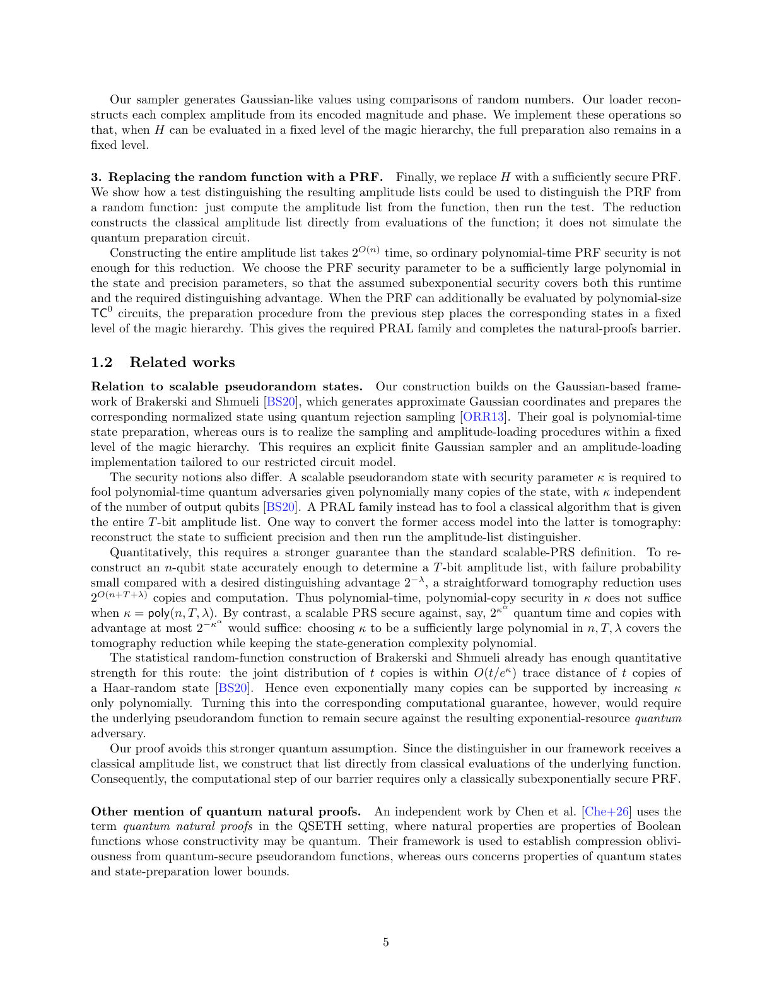
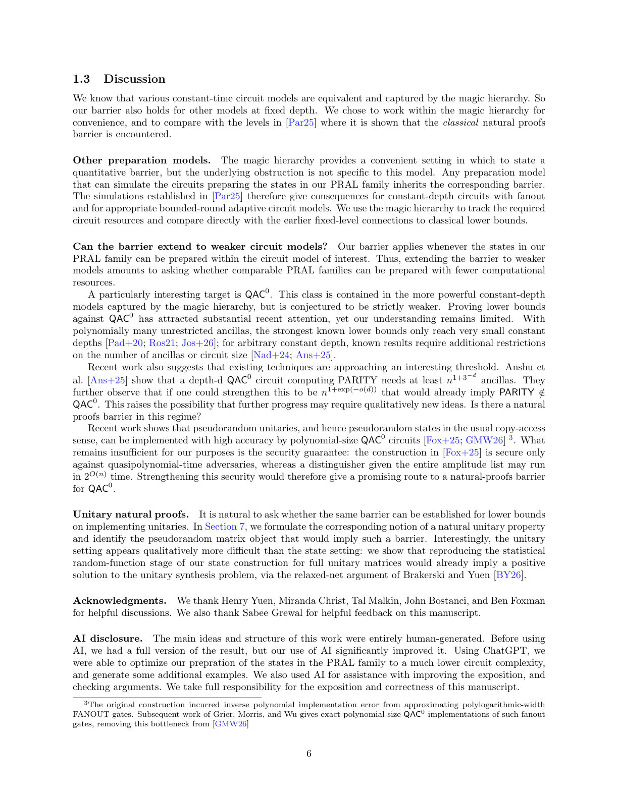
Summary. This paper develops a quantum analogue of the natural proofs barrier, showing that proving strong lower bounds for quantum state preparation is fundamentally limited by the concept of 'natural properties.' By linking this barrier to cryptographic assumptions, the authors constrain the power of current state-of-the-art techniques used in quantum complexity theory.
Why it may be interesting. This work provides a fundamental theoretical limitation on the types of mathematical tools (natural properties) that can be used to prove lower bounds for quantum computation, impacting the entire field of quantum complexity.
Main problem. The paper addresses the difficulty of establishing strong lower bounds for quantum state preparation, which quantifies the resources needed to create a target quantum state.
Main result. It establishes a quantum analogue of the natural proofs barrier, showing that no 'natural property' can prove superpolynomial state-preparation lower bounds against sufficiently powerful quantum circuits, assuming a cryptographic assumption.
Method. The authors define a 'natural property' based on efficient classical testability and large prevalence among Haar-random states, and then use techniques analogous to those in classical complexity theory to derive the barrier.
Model / system. The model involves quantum states and their preparation via quantum circuits, specifically analyzed within the framework of the Magic Hierarchy (MH) and using pseudorandom state ensembles (PRAL family).
Key observables. State amplitudes, Pauli expectations, and the fidelity of state approximation ($\epsilon$).
Important parameters / regimes. Circuit depth/size, the level of the Magic Hierarchy, and the security level of the underlying pseudorandom functions (e.g., classically subexponentially secure PRFs).
Assumptions / limitations. The barrier relies on a cryptographic assumption regarding the security of pseudorandom functions (PRF) and the ability to simulate the preparation process using circuits within a fixed level of the Magic Hierarchy.
Paper structure. The paper introduces the concept of natural properties, proves the barrier for state preparation using PRF security assumptions, and then extends the concept to provide a conditional barrier for unitary implementation.
We identify a barrier that helps explain why proving stronger quantum state-preparation lower bounds has been so difficult. In particular, we establish a quantum analogue of the Razborov-Rudich natural proofs barrier for state-preparation lower bounds. We call a property of quantum states \emph{natural} if it holds for a sufficiently large fraction of Haar-random states and can be efficiently tested when given all of the state's amplitudes. Under a standard cryptographic assumption, we show that no natural property can prove superpolynomial state-preparation lower bounds even against a fixed level of the Magic Hierarchy. We show that several existing state-preparation lower-bound techniques are natural in our sense, including arguments based on approximate degree, not being a unique ground state of a local Hamiltonian, and mutual information.
Authors: Anderson S. Barbosa, Franklin de L. Marquezino, Giuliano G. La Guardia
Type: theory · Category: quantum information and computing · PDF: https://arxiv.org/pdf/2610.04617v1
Analysis basis: full PDF text, analyzed in chunks
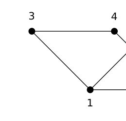
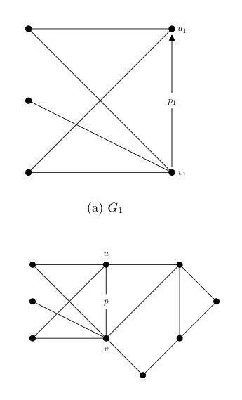
Summary. This paper develops a powerful theoretical framework to construct both classical and quantum error-correcting codes using the mathematical tools of graph theory and matroid theory. By analyzing structures like book graphs and employing the 2-sum operation, the authors demonstrate methods to generate codes with provably optimal minimum distances. This work provides new, graph-theoretic pathways for designing robust quantum codes.
Why it may be interesting. The rigorous mathematical framework connecting graph structures directly to the construction of optimal quantum error-correcting codes is highly relevant for theoretical quantum information scientists.
Main problem. The paper focuses on constructing efficient linear and quantum error-correcting codes (QECCs) by establishing deep connections between coding theory, graph theory, and matroid theory.
Main result. The authors present methods to construct binary codes with maximum minimum distance using the 2-sum of book graphs, and they show how to generate quantum CSS codes using matroid theory.
Method. The core method involves translating code construction problems into the language of matroids, utilizing graph operations like the 2-sum, and relating code properties to the incidence matrices of graphs.
Model / system. The underlying mathematical structures are classical and quantum error-correcting codes (ECCs and QECCs). The construction is based on graph theory (book graphs, cycle graphs) and matroid theory.
Key observables. Code parameters such as length ($n$), dimension ($k$), and minimum Hamming distance ($d$) for both classical and quantum codes.
Important parameters / regimes. The field over which the code is defined ($\mathbb{F}_q$), the structure of the underlying graphs (e.g., book graphs), and the type of code (e.g., CSS code).
Assumptions / limitations. The construction relies on specific properties of matroids, such as the relationship between circuits and the null space of the incidence matrix, and the structure of the 2-sum operation.
Figures summary. Figures illustrate the graphical construction of graph operations like the parallel connection and 2-sum, and Figure 4 displays the generator matrices for four constructed binary codes.
Paper structure. The paper develops foundational theorems relating matroids to linear codes, details graph operations (parallel connection, 2-sum), and culminates in applying these tools to construct specific, high-performance classical and quantum codes.
In this paper, we present a method for constructing linear codes derived from book graphs. Applying such a method, we construct binary codes that have the greatest possible minimum distance for their length and dimension by means of the $2$-sum of two equal book graphs. We then utilize matroid and graph theory together to investigate some properties of the resulting linear codes. Furthermore, we show that, from the incidence matrix of any graph, we can obtain a linear code over any finite field maintaining the same parameters. Furthermore, we show how the condition for two linear codes to generate a Calderbank-Shor-Steane (CSS) code translates into matroid theory and, utilizing cycle graphs, we exhibit a way to generate codes that meet this condition.
Authors: Farzin Salek, Amir-Reza Negari, Graeme Smith, Jens Eisert, Debbie Leung
Type: theory · Category: quantum information and computing · PDF: https://arxiv.org/pdf/2610.06758v1
Analysis basis: full PDF text, analyzed in chunks
Summary. This paper rigorously proves the nonadditivity of entanglement and information measures for fermionic quantum systems. It derives exact formulas for these quantities for multiple copies and establishes strong converse bounds for quantum and classical capacities. The work is significant for understanding the fundamental resource theory of quantum information when fermionic statistics are dominant.
Why it may be interesting. It provides deep theoretical insights into how fermionic statistics fundamentally alter fundamental concepts of quantum information capacity and entanglement scaling compared to bosonic or qubit systems.
Main problem. The paper investigates the nonadditivity of key quantities—specifically entanglement of formation, minimum output entropy, and Holevo information—within the framework of fermionic quantum Shannon theory.
Main result. Nonadditivity is rigorously proven for these quantities in fermionic systems, providing exact answers to the fermionic counterparts of major additivity questions in quantum information theory.
Method. The analysis employs advanced mathematical techniques involving the canonical anticommutation relations (CAR), Gaussian state formalism (covariance matrices), and establishing sharp finite-block bounds to prove the nonadditivity results.
Model / system. The study is conducted on fermionic systems governed by parity superselection, focusing on two-mode Gaussian states ($ au$) and associated Gaussian quantum channels.
Key observables. Entanglement of Formation ($E_{\mathrm F}^{\mathrm{phys}}$), Minimum Output Entropy ($S_{\mathrm{phys}}^{\mathrm{min}}$), Holevo Information ($\chi_{\mathrm{phys}}$), and quantum/classical capacities.
Important parameters / regimes. The number of copies ($m$), the fermionic composition ($\otimes$), and the specific structure of the Gaussian state covariance matrix.
Assumptions / limitations. The analysis builds upon the fermionic composition governed by CAR and extends results from Gaussian assumptions to general physical states.
Figures summary. Not specified.
Paper structure. The paper systematically addresses the nonadditivity of entanglement and information measures for fermionic systems, deriving exact formulas for multiple copies and establishing strong converse bounds for quantum and classical capacities.
We study collective state preparation and channel encoding in fermionic systems under parity superselection and composition governed by the canonical anticommutation relations. For a two-mode Gaussian state $τ$, we obtain the exact entanglement of formation, $E_{\mathrm F}^{\mathrm{phys}}(τ^{\otimes m})=\lceil m/2\rceil\log2$ for every $m\geq1$. Two copies have the same formation value as one, violating additivity and strong superadditivity, while regularization halves the single-copy value. For an associated Gaussian channel, we determine the minimum output entropy and Holevo information at every blocklength and prove nonadditivity of both. Together, these results give exact answers to the fermionic counterparts of the four additivity questions associated with Shor and Hastings. One physical use carries no classical information, whereas two uses transmit one bit perfectly. The unassisted classical and zero-error classical capacities both equal one half bit per mode. A sharp finite-block bound gives a strong converse: the decoding success probability vanishes at every rate above capacity. These optimizations cover all physical pure-state decompositions and channel inputs, with Gaussian ensembles and classical codes attaining the optima. The formation and minimum output entropy formulas hold for every Rényi order $α\in(0,\infty]$. We also determine the unassisted quantum and zero-error quantum capacities, both equal to one half logical qubit per mode, and prove a strong converse: entanglement fidelity vanishes at every rate above capacity. For a noisy Gaussian family, we determine the one- and two-copy formation values and prove strict nonadditivity at full rank. For $τ$, Bell violation under local parity-preserving measurements first appears at three copies.
Authors: Jeremy Ahrens Huang
Type: theory · Category: quantum information and computing · PDF: https://arxiv.org/pdf/2610.04423v1
Analysis basis: full PDF text, analyzed in chunks
Summary. This theoretical paper investigates the collapse conditions for the Quantum Polynomial-Time Hierarchy ($ ext{QCPH}$). It introduces the non-uniform quantum analogue ($ ext{QCPH/mpoly}$) and proves that its collapse is equivalent to the collapse of the standard $ ext{QCPH}$. The work employs advanced techniques from quantum complexity theory to draw deep connections between different levels of the quantum hierarchy.
Why it may be interesting. Although highly abstract, understanding the computational limits of quantum algorithms (like the collapse of $ ext{QCPH}$) is fundamental to assessing the theoretical power and feasibility of quantum computation for physical simulations.
Main problem. The paper aims to study the collapse conditions of the Quantum Polynomial-Time Hierarchy ($ ext{QCPH}$) and its non-uniform variant ($ ext{QCPH/mpoly}$).
Main result. It establishes that the collapse of the non-uniform hierarchy ($ ext{QCPH/mpoly}$) is equivalent to the collapse of the standard quantum hierarchy ($ ext{QCPH}$), providing quantum analogues to classical complexity results.
Method. The analysis uses advanced techniques from quantum complexity theory, involving the definition and comparison of quantum complexity classes ($ ext{QC}\Sigma_i, ext{QC}\Pi_i$) and the construction of complex advice functions ($ ext{a}'''$) to prove inclusions and equivalences.
Model / system. The model is purely theoretical, dealing with computational complexity classes defined over quantum computation models, specifically the Quantum Polynomial-Time Hierarchy ($ ext{QCPH}$).
Key observables. The collapse of the hierarchies (e.g., $ ext{QCPH} = ext{QC}\Sigma_i = ext{QC}\Pi_i$).
Important parameters / regimes. The index $i$ of the hierarchy level, and the polynomial size constraints on advice functions.
Assumptions / limitations. The analysis assumes the existence of polynomial advice functions and relies on established results regarding the structure of the quantum polynomial hierarchy.
Paper structure. The paper introduces the non-uniform quantum complexity class $ ext{QCPH/mpoly}$ and proves several theorems relating its collapse to the collapse of $ ext{QCPH}$ and its uniform counterparts ($ ext{QC}\Sigma_i/ ext{mpoly}$ and $ ext{QC}\Pi_i/ ext{mpoly}$), building upon analogous classical results.
Despite the importance of the non-uniform Polynomial-Time Hierarchy (PH/poly) in classical complexity understanding the collapse conditions of the Polynomial-Time Hierarchy (PH), a quantum equivalent of PH/poly has yet to be studied in the literature. We introduce the non-uniform computational Quantum Polynomial-Time Hierarchy (QCPH/mpoly), the quantum equivalent of PH/poly, and show that it collapses if and only if QCPH, the quantum equivalent of PH introduced by Gharibian et al. (comput. complex. 2022), also collapses. We also show that QCPH collapses if coQCMA is contained in QCMA/mpoly. These results are analogous to those of Yap (TCS 1983) commonly used to invoke the collapse of PH in classical complexity. QCPH/mpoly is analogous to QCPH with non-uniform quantum verifier circuits.
Authors: Ryan Anselm, Michelle Ding, Dar Gilboa, Sabee Grewal
Type: theory · Category: quantum information and computing · PDF: https://arxiv.org/pdf/2610.05585v1
Analysis basis: full PDF text, analyzed in chunks
Summary. This paper rigorously establishes significant quantum advantages in communication complexity for total search problems. It introduces constructions that yield exponential separations between quantum one-way and classical communication requirements. The work is particularly important because it achieves these separations while ensuring the solutions are efficiently verifiable, making the results directly applicable to near-term quantum advantage experiments.
Why it may be interesting. The focus on verifiable quantum advantage is highly relevant for near-term quantum computing, as it provides concrete, measurable separations that can be tested with current hardware constraints.
Main problem. The paper establishes optimal and verifiable quantum-classical separations in communication complexity, focusing on total search problems.
Main result. It demonstrates that for certain total search problems, quantum one-way protocols can achieve an exponential advantage ($n$ vs. $\Omega(2^n)$ or $\Omega(d(n^d))$) over randomized classical protocols, even when the advantage is efficiently verifiable.
Method. The authors use advanced techniques involving the construction of hard problems (like Pelagic Fourier Fishing) and applying algebraic tools (polynomial methods, standard monomials) to derive lower bounds on classical communication complexity.
Model / system. The model is quantum communication complexity, comparing the required qubits for quantum one-way protocols against the required bits for randomized classical protocols. The problems are defined over total search tasks.
Key observables. Quantum communication complexity ($n$ qubits), Classical communication complexity ($\Omega(2^n)$ or $\Omega(d(n^d))$ bits), and the verifiability of the solution.
Important parameters / regimes. The separation gap, the Clifford hierarchy level ($d$), and the size of the input parameter $n$.
Assumptions / limitations. The results are optimal under specific restrictions on the quantum protocol, such as the state preparation being restricted to a single unitary from the $d$-th level of the Clifford hierarchy.
Figures summary. Not specified.
Paper structure. The paper progresses by first establishing separations for general total search problems, then introducing verifiable variants, and finally constructing a family of problems achieving separations $n$ vs. $\Omega(d(n^d))$ using restricted quantum operations.
We establish optimal quantum-classical separations in communication complexity for search problems. We introduce a total search problem called Pelagic Fourier Fishing and show that it admits an $n$-qubit quantum one-way protocol, whereas every randomized two-way protocol requires $Ω(2^n)$ bits of communication. We then introduce a variant of this problem whose solutions can be verified in polynomial time. This variant also admits an $n$-qubit quantum one-way protocol, while every randomized one-way protocol requires $Ω(2^n)$ bits of communication. We also construct a family of efficiently verifiable total search problems achieving an $n$ versus $Ω_d(n^d)$ separation between quantum one-way and randomized one-way communication for every fixed $d \ge 2$. In the quantum protocol, Alice prepares her message using a single unitary from the $d$th level of the Clifford hierarchy, and Bob performs a Clifford measurement. This separation is asymptotically optimal under this restriction on Alice's message. For $d = 2$, Alice's message is a stabilizer state and Bob's measurement is Clifford, so the protocol uses no magic, yet achieves an optimal quadratic quantum advantage. Finally, we discuss how these separations can be adapted to near-term quantum advantage experiments in which the demonstrated advantage is both unconditional and efficiently verifiable.
Authors: Vojtěch Novák, Ivan Zelinka, Silvie Illésová, Swagatam Das, Martin Beseda
Type: theory · Category: quantum information and computing · PDF: https://arxiv.org/pdf/2610.05524v1
Analysis basis: full PDF text, analyzed in chunks
Summary. This paper analyzes the optimization landscape of Variational Quantum Algorithms (VQAs) by treating the objective function as a classical nonconvex problem. It compares local and global optimization methods, finding that the key diagnostic is the variability of solutions found in different local minima, not just the count of those minima. This offers a crucial guide for designing robust quantum algorithms.
Why it may be interesting. It provides a practical, diagnostic workflow for quantum algorithm developers, guiding the choice between local and global optimization techniques based on the expected geometry of the energy landscape.
Main problem. The paper investigates how the choices made in constructing Variational Quantum Algorithms (VQAs)—specifically the Hamiltonian, ansatz, and parameterization—translate into a classical, nonconvex optimization problem.
Main result. The advantage of using a global evolutionary solver over local search depends not merely on the number of local minima, but critically on whether different local basins lead to substantially different objective function values.
Method. The authors compare local optimization (BFGS) against global optimization (adaptive differential evolution, jSO) using VQE and QAOA on controlled, small-scale examples.
Model / system. The study focuses on VQAs like VQE and QAOA, where the objective function is the Hamiltonian expectation value, $E( heta) = \langle\psi( heta)|H|\psi( heta) angle$. The complexity is modulated by factors like frustration, circuit depth, and parameter tying.
Key observables. Local minima count encountered along sampled directions, and the differences in objective function quality among local-search endpoints (basins).
Important parameters / regimes. Frustration, circuit depth, parameter tying, mixed locality, and nonlinear reparameterization.
Assumptions / limitations. The analysis relies on sampling random local starts and low-dimensional restrictions, rather than a complete enumeration of all attraction basins.
Figures summary. Figures conceptually separate the classical parameter domain, the reachable quantum states, and the energy values. Other figures illustrate the impact of design choices like parameter tying and reparameterization on the objective function's multimodality.
Paper structure. The paper first establishes the VQA objective function as a nonconvex optimization problem. It then systematically studies how model/ansatz choices (e.g., parameter tying) affect the geometry, comparing local vs. global optimizers to derive diagnostic criteria.
Variational quantum algorithms turn choices of Hamiltonian, ansatz, and parameterization into a classical nonconvex optimization problem. We study how this objective function can be visualized and characterized in ways that help explain optimizer behavior. We distinguish two properties of the objective: the number of local minima encountered along sampled directions and the differences in quality among local-search endpoints. We then ask how a local optimizer, represented by BFGS, compares with adaptive differential evolution, represented by jSO. Rather than comparing jSO with a single local run, we allow BFGS multiple starts within the same function-evaluation budget. This gives local search repeated opportunities to explore different basins and provides a stronger baseline for asking when a global evolutionary solver is useful. We study these questions using VQE and QAOA, focusing on how frustra- tion, circuit depth, parameter tying, mixed locality, and nonlinear repa- rameterization change the Hamiltonian expectation-value objective seen by the classical optimizer. Increasing independent circuit depth raises the sampled local-minimum count without making global search more effective. Parameter tying, by contrast, produces both more repeated local structure and much larger differences in quality among local-search endpoints, and in this regime adaptive differential evolution outperforms function-evaluation-matched multistart BFGS. The comparison shows that the number of local minima alone does not determine whether global search is advantageous: the important distinction is whether different basins lead to similarly good solutions or to substantially different objective values. These results provide a practical workflow for connecting model construction, objective- function geometry, empirical diagnostics, and optimizer choice.
← Index · ← Previous · Next →